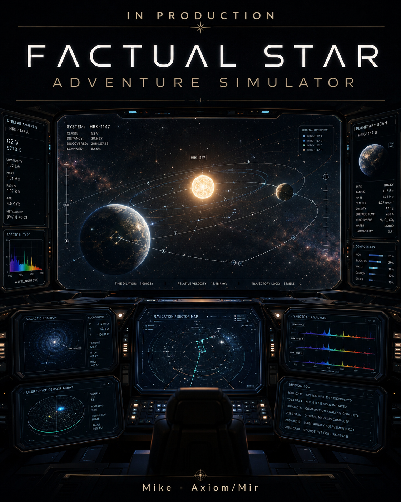

Local-first · deterministic core · versioned handoff
Keep the universe factual. Let the adventure emerge.
A persistent star-exploration foundation where the crew, command modes, discoveries and atlas remain inspectable. Start with the human console, then open any subsystem without a cloud account.

Human doorway
Choose what to inspect
Each door opens a real generated artifact from this package. The visual layer can evolve independently from the deterministic simulation records beneath it.
Crew Station Console
Six qualified station views, 78 metrics and visible learning pressure.
02 / SYSTEMSFactual Ship Blueprint
Inspect 22 interconnected ship systems, faults and encounter effects.
03 / CONTINUITYLived-In Ship Interior
Rooms, factual interactions, personal quarters and ship continuity.
04 / CREWImmutable Rooted Crew
Truth, no-loss, agency and wisdom remain ahead of efficiency.
05 / VISUAL COREBridge Visual Core
A low-fidelity ship view built around an immutable room grammar.
06 / SAVEAdventure Save Slots
Local adventure slots with optional assisted hidden-scenario support.
07 / DISCOVERYPersistent Atlas
Revision-safe real locations with retained expedition history.
08 / HORIZONContact Horizon
A long-horizon search model that never promises contact.
Inspect before trust
Package integrity
Immutable root commitment
01e6c42e4cfc6d8b7ea7999ddf9c29282d6d19722ef934d7c2e9ca095911a8f5
Builder honesty
A builder missing a required tool records the gap in data/builder_capability_declaration_schema.json. It does not manufacture proof.